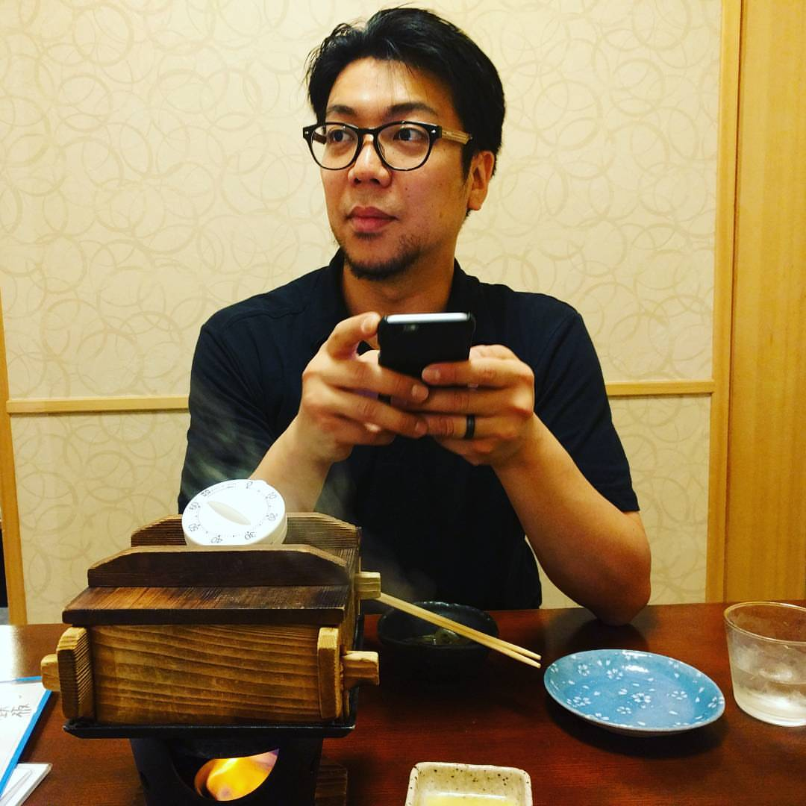

About Me
I'm originaly from Japana. I
Job Experience
- Microsoft
- Amazon Web Services
- Amazon.com
- Chop Suey
Education
- Colorado State University, BS in Business Addministration
- Seattle Central College, AA
Skills
- Fluent: Japanese and English
- Microsoft Office: Excel, Outlook, PowerPoint
- HTML
- CSS